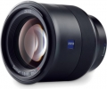

高速度，快速自动对焦，还有光学成像稳定器——麻雀碎小五脏具全的全幅短小型伸缩镜头：用于人像、盛会和婚礼摄影最为理想。
用了很久才来评论，除了光圈小点，这只头几乎无可挑剔
1.分辨率高，锐度好。最大光圈锐度超过FE 55 1.8； 2.防抖效果好，对于没有机身防抖的一代A7来说，特别是A7R来说，它就是神器； 3.色彩很舒服，蔡司的色彩还原是一绝，同样的设置，这只头拍人像，成像发黄的情况低于FE 55/1.8和FE 35/2.8以及FE 24-70/F4； 4.做工非常棒，手感压手。我的这只头可能是所谓的洋垃圾（有多惨，请见图！），到处都是磕碰变形，但是就这样也没有影响自动对焦以及防抖，最大光圈成像也依然锐利无比，蔡司的做工可见一斑； 5.虚化很柔美，Sonnar结构的特点，大光圈有空气切割感； 6.抗眩光非常强，蔡司的镀膜确实看家一绝，直面阳光信心十足； 7.对焦很快，声音很轻，配合索尼的眼部对焦，直接对焦到眼睛，拍人像十分方便。
1.大光圈焦外有旋转的趋势，口径蚀明显，边缘分辨率下降较大，虽然85MM的人像头不太注重边缘成像，但毕竟是成像上的短板，所以解像力没有给满； 2.暗角比较明显，不过可以通过后期很简单的校正，不是很大的影响； 3.性价比没给满，因为即使它各方面都很优秀，但是毕竟只有1.8的光圈，价格却是别家同规格镜头的一倍有余，就算考虑防抖，它的价格也过于昂贵了，二手4000多能淘到的话，性价比就很高了。 另外传闻说这只头其实是腾龙设计的，靠着蔡司的品牌加持，卖到这么高的价格，就显得性价比更低了，当然还是算物有所值的，只是没有那种物超所值的惊喜感，就是这个价位的镜头应该有的表现而已。
色彩比fe85 1.8好很多，不偏黄而且有淡淡的德味{青蓝色掉} 饱和度高但是锐度不如FE85 1.8乞丐版。85GM主要是焦外好锐度更均匀，但是重量体积和对焦速度不如batis85。总的来说我还是更喜欢Batis85多一些，而且现在价格只要6000多。再能出个35 1.8/2的batis就更好了
色彩好，在2400W像素的机身上画质足够用了。重量体积都不错，对焦快带防抖。价格也还算公道。
大光圈画质还是不如85GM，我一般都是f2.8-f4用，而且是2400W像素的A9所以感觉差异不明显，可能A7R3上会有一些锐度差别吧。然后微反差和细节刻画能力以及氛围不如老的85ZA，我觉得2400W像素上色彩和细节最好的还是85ZA 1.4那个镜头。 没有对焦锁定按钮，表示不理解。
色彩艳丽，成像在不同的光环境下差异很大，总体满意。
轻便美观，成像扎实。
A7上白平衡有点怪，和C家85 1.8比性价比太低。焦外很一般。 以前主力镜头是85L 1.2 一代，还是感觉到有很大差异的。